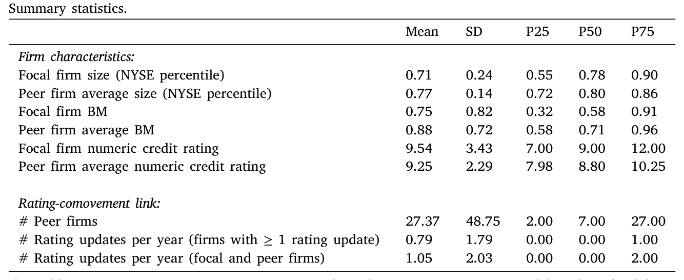
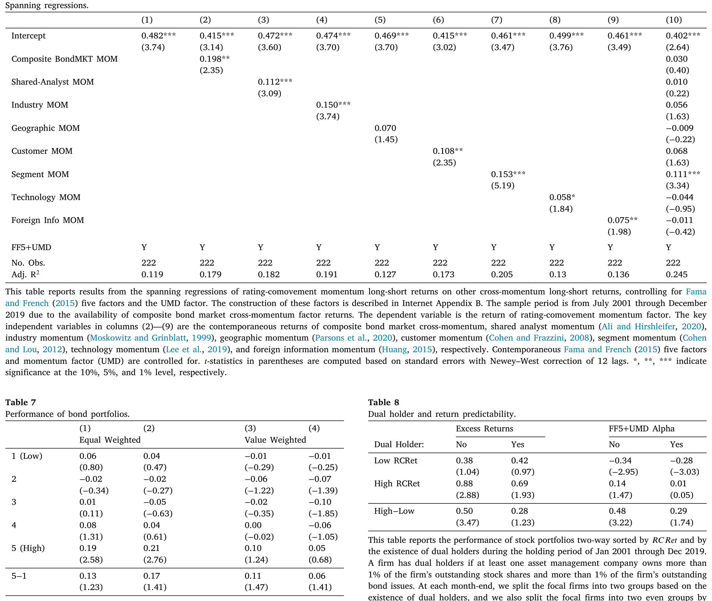
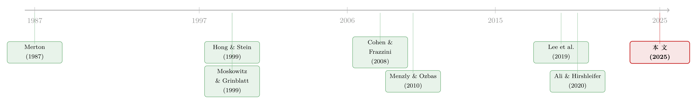

评级一起动，股价却慢半拍——藏在债券市场里的「经济联系」
本文读的是 Feng, Huo, Liu, Mao & Xiang (2025, JFE)：作者用「信用评级一起被调整」这件事，去识别公司之间一种只藏在债券市场里的经济联系；据此构造的股票多空组合，每月能赚到 0.45% 的风险调整后 alpha（六因子 t = 3.47），而且现有文献里那一长串「经济联系」都解释不掉它。背后的机制，是股票市场和债券市场之间那道看不见的墙——市场分割 (market segmentation)。
1 一个老问题，和一个被忽略的角落
跨公司收益可预测性 (cross-firm return predictability) 这个题目，金融学界已经做了二十多年。它的逻辑朴素得近乎直白：如果 A、B 两家公司在经济上彼此相关，那么当一条对 A 有价值的消息传来、把 A 的股价推高时，这条消息其实对 B 也同样重要；可是由于投资者注意力有限，B 的股价不会立刻跟上，而是慢半拍才反应过来。于是，A 今天的收益，就能预测 B 明天的收益——一个「领先—滞后 (lead–lag)」的赚钱机会，就这样从「注意力不足」的缝隙里漏了出来。
剩下的事，就成了一场寻找「联系」的竞赛。文献里的联系五花八门：同处一个行业（Moskowitz and Grinblatt, 1999；Hou, 2007）、上下游的客户—供应商关系（Cohen and Frazzini, 2008；Menzly and Ozbas, 2010）、同一集团下的不同业务板块（Cohen and Lou, 2012）、地理上的邻近（Parsons et al., 2020）、采用相似技术（Lee et al., 2019）、乃至被同一批分析师覆盖（Ali and Hirshleifer, 2020）。每找到一种新的联系，就等于在「公司关系」这张大网上多描出一条线。
但你有没有注意到，这些联系几乎全都来自股票市场或公开披露——年报里写明的客户、专利数据里的技术相似度、分析师覆盖名单。换句话说，大家一直在同一片光照得到的地方找钥匙。这篇论文真正的问题是：有没有一种经济联系，它只在债券市场里显形，而股票投资者根本看不见？ 如果有，它会不会恰恰因为「看不见」，而带来一块还没被人吃掉的可预测性？
2 用「评级一起动」当探针
要回答这个问题，作者需要一把能伸进债券市场、把「公司间联系」捞出来的探针。他们选的，是 信用评级共动 (credit-rating comovement)。
想法是这样的。信用评级机构 (credit rating agencies, CRAs)——穆迪、标普这些——的本职工作，是对发债企业的违约风险做出前瞻性的判断。当两家公司在基本面上真的相关时，影响一家偿债能力的冲击，往往也会同时压到另一家头上；于是评级机构会在很近的时间窗口内，朝同一个方向调整这两家公司债券的评级。作者据此下了一个操作性的定义：
如果两家公司发行的公司债，其评级在 ±10 天 的日历窗口内被朝同一方向更新，就记为一次「评级共动」。若两家公司在过去三年里至少发生过 3 次评级共动，就在当月把它们连成一对。这样，每个「焦点公司 (focal firm)」每个月都会被连到一组「同伴公司 (peer firms)」上。
这把探针有两个讨人喜欢的性质。首先，评级更新对债券投资者是「显著信息」——大量经典证据显示，债券价格会对评级变动作出明显反应（Grier and Katz, 1976；Hand et al., 1992；Hite and Warga, 1997；May, 2010）。这意味着这条联系在债券市场里是被认真对待的。其次，整条联系是用历史公开信息按月构造的，所以可以据此搭一个没有「前视偏差 (look-ahead bias)」、真实可交易的策略。
接着，一个自然的问题是：这种「评级一起动」的公司，基本面真的相关吗？还是只是评级机构的巧合？作者做了一组面板回归，检验被连起来的公司在两类基本面上是否同向变动：(i) 盈利、销售、每股收益 (EPS)、新增资本的增长率；(ii) 各种违约概率代理变量的变化，包括 O-score (Ohlson, 1980)、Z-score (Altman, 1968)、以及基于 Merton (1974) 的预期违约频率 (Bharath and Shumway, 2008)。结果很干净：被评级共动连起来的公司，基本面联系确实很强。地基打好了，可预测性才有立足之处。
3 主结果：每月 0.45% 的 alpha
铺垫到这里，真正关键的一步终于到来。作者用一个变量 RCRet 来度量「来自评级共动联系的、有价值的信息」：对每个焦点公司，在每个月把它所有同伴公司当月的平均收益算出来，这个平均收益就是 RCRet。直觉上，如果同伴们这个月集体上涨，那这些利好里有一部分迟早也会落到焦点公司头上。
然后是经典的组合排序：每个月按 RCRet 把所有焦点公司分成五组，持有到下个月。结果是单调的——从最低组到最高组，持有期收益逐级递增。一个市值加权的多空组合（买入最高组、卖空最低组），在 2001 年 1 月至 2019 年 12 月 间，平均每月赚 0.45% 的超额收益，t = 3.20。
更重要的是，这块收益经得起各种风险调整。在控制了 Fama and French (2015) 五因子加 Carhart (1997) 动量因子（合称「六因子」）之后，多空组合的月度 alpha 依然是 0.45%，t = 3.47。作者又做了 Fama–MacBeth 横截面回归，在控制一整套已知能预测股票收益的特征之后，RCRet 仍然显著正向预测焦点公司未来一个月的收益。

Table 1
那么，信息到底是怎么流动的？作者进一步拆开方向：当一条对一组相关公司都重要的消息到来时，它先被反映进大公司（信息环境更好）的股价，然后才带着延迟扩散到小公司（信息环境更差）。这正是 Hong and Stein (1999) 笔下「渐进信息扩散」的味道，也解释了组合排序里那个领先—滞后的图案从何而来。
4 这不是旧酒换新瓶
读到这儿，一个挑剔的读者一定会皱眉：你这条「评级共动」，会不会只是把文献里那些已知联系重新发现了一遍？同行业、客户—供应商、共同分析师……这些联系本来就彼此交叠，说不定评级共动只是它们的某种线性组合。
这是全文最该认真对付的质疑，作者的回应也最见功力。他们做了一组「张成回归 (spanning regressions)」：把已有文献里那一长串跨公司动量因子统统作为控制项塞进去——共同分析师动量 (Ali and Hirshleifer, 2020)、行业动量 (Moskowitz and Grinblatt, 1999)、地理动量 (Parsons et al., 2020)、客户动量 (Cohen and Frazzini, 2008)、板块动量 (Cohen and Lou, 2012)、海外信息动量 (Huang, 2015)、技术动量 (Lee et al., 2019)。把这些全部控制掉之后，基于评级共动的多空组合依然赚到统计上显著、经济上可观的六因子 alpha。
于是反转出现了：评级共动并不是旧联系的马甲，它捕捉到的是一个全新维度的经济联系。作者进一步追问这个新维度的「内容」是什么，给出了一个漂亮的解释——债券市场里的公司关系，本质上是信用风险上的关系；评级机构作为信息中介，把各种各样的信用风险联系，最终都「翻译」成了评级上的共动。为佐证这一点，他们挑了四种具体的债市联系：(i) 直接的商业信用 (trade credit) 关系；(ii) 共同的银行贷款人；(iii) 共同的公司债基金持有人；(iv) 共享的债券分析师。把这四种合成一个「复合因子 (composite factor)」后发现，评级共动因子在它上面有显著的正载荷——确实捕捉到了这些具体关系；而反过来，评级共动因子能在很大程度上吸收这个复合因子，复合因子却吸收不了它。一句话：评级共动是一把足够强的尺子，能把债券市场里五花八门的公司关系一网打尽。
（关于「同行联系如何驱动跨股票可预测性」这条线，本博客此前也聊过一篇视角颇为互补的工作，参见《强邻、弱邻，和你站的位置：被「折叠」起来的同行效应》。）
5 机制：那道叫「市场分割」的墙
到此为止，论文证明了「有这么一块钱」。但真正的学术贡献，在于回答「为什么这块钱没被人捡走」。作者的答案是 市场分割 (market segmentation)：股票市场和公司债市场，在很大程度上是两套互不连通、投资者也基本不重叠的市场（Duarte et al., 2007；Kapadia and Pu, 2012；Choi and Kim, 2018）。债券投资者看得清清楚楚的评级联系，对股票投资者来说几乎是另一种语言。文中甚至引了 Raymond James 固收主管的一句大白话：「股票市场看世界的方式，和债券市场看世界的方式，中间明显隔着一道分界。」
光有故事不够。作者从「市场分割」这个机制里，推出了四个可证伪的预测，逐一拿数据去碰——这一节是全文最扎实的地方。
预测一：可预测性应该只存在于股票市场，而不在债券市场。 逻辑很硬：评级联系对债券投资者本就是显著信息，只要债券市场内部没有分割，同伴公司债券价格里的信息会很快被反映进焦点公司的债券价格。作者照搬主结果的做法，但这次用同伴公司的债券平均收益去排序、并对公司债市场因子做调整。结果，债券多空组合的 alpha 只有大约 0.1%，t 值还不到 1.5——不显著。这是一个漂亮的安慰剂检验 (placebo test)：可预测性确实在该消失的地方消失了。
预测二：可预测性的强弱，应该取决于市场分割的程度。 如果某家焦点公司，存在同时大量持有它股票和债券的投资者——作者跟着 Chen et al. (2019) 把持有焦点公司股票和债券各超过 1% 的资管公司定义为「双重持有人 (dual holders)」——那么债券市场里的这条联系，更容易被「搬运」到股票市场，迟滞反应应当被大大削弱。按 RCRet 与「是否存在双重持有人」做双重排序后，结论与预测一致：可预测性主要来自没有双重持有人的那部分焦点公司。这和 Auh and Bai (2020) 的精神一脉相承——基金家族的组织结构，能促成股东与债权人之间的信息整合。
预测三：股票分析师会「慢慢地」把评级联系里的信息纳入预测。 这一步尤其巧妙，因为分析师发预测不受任何交易摩擦的约束，所以它直接排除了「是交易成本而非注意力」在驱动结果的可能。评级机构关心违约风险，股票分析师更关心增长期权 (growth options)——两者职责的差异，本身就是市场分割的一个微观来源。回归显示，RCRet 确实显著正向预测焦点公司未来一个月里、分析师一致 EPS 预测的修正。这也顺带说明：共享股票分析师 (Ali and Hirshleifer, 2020) 这条联系，解释不了评级共动带来的可预测性。
预测四：在「风险转移 (risk-shifting)」严重的公司里，效应应该被削弱。 对高违约概率的公司，潜在的风险转移会让股东价值和债权价值朝相反方向走，从而扭曲被连起来的公司之间「股价同向」的关系。果然，在那些容易发生风险转移的公司联系里，评级共动动量被显著削弱，而在其余联系里依旧显著——这从反面坐实了：评级共动捕捉的，正是债券市场里那层信用风险联系。

Table 6
四个预测，四次验证，方向全部对得上。这种「从一个机制推出多个相互独立的可观测含义、再逐一检验」的做法，比单纯报一个 alpha 要有说服力得多。
6 文献脉络
把这篇论文放回它所在的谱系里看，会更清楚它的位置。
最上游，是关于「为什么价格不会瞬间反映所有信息」的行为金融理论：Merton (1987) 的「不完全信息下的市场均衡」告诉我们，投资者只交易自己「认识」的资产；Hong and Stein (1999) 则给出渐进信息扩散下的欠反应与动量。这两块，是所有「领先—滞后」研究的理论地基。

中游，是把这套理论落到「具体经济联系」上的实证大军。Moskowitz and Grinblatt (1999) 用行业、Cohen and Frazzini (2008) 用客户—供应商关系打开了局面；Menzly and Ozbas (2010) 把「市场分割/专业化」明确点为投资者忽视上下游联系的原因；此后 Cohen and Lou (2012)、Huang (2015)、Lee et al. (2019)、Parsons et al. (2020) 沿着「板块、海外、技术、地理」一路把网织密。到 Ali and Hirshleifer (2020)，文献甚至提出「共享分析师覆盖」可能是统一众多溢出效应的一条主线。
而这篇论文的落点，恰恰是在这条主线上捅了一个洞：它指出存在一种只在债券市场显形的联系，连「共享分析师」都罩不住它。它的贡献因此是双重的——既给跨公司可预测性文献添了一个全新且强力的联系度量，又把「股票—债券市场分割」这个一直被零散讨论的摩擦（Collin-Dufresne et al., 2001；Chordia et al., 2017；Choi and Kim, 2018），第一次清晰地立成了「信息为什么过不去」的主因。
评论与延伸（Q&A + 研究方向）
(a) 几个可能的疑问
Q：评级机构本来就滞后，「评级一起被调」会不会只是反映了已经公开、早被股价消化的信息？
这正是作者要防的。关键在于，评级机构豁免于 2000 年 10 月 23 日生效的「公平披露条例 (Regulation FD)」，能合法获取预算、内部资本分配等非公开信息；Jorion et al. (2005) 也发现 Reg FD 之后评级变动引发了更大的股价反应。所以评级更新并不只是公开信息的回声，它带有评级机构独立判断的增量信号。
Q：±10 天、过去三年至少 3 次——这些阈值是不是凑出来的？
论文在第 6.3 节用了多种替代方式来识别评级共动，结论在质上一致。当然，「数据挖掘出最优窗口」的隐忧无法完全排除，这也是这类构造性指标的通病；安慰剂检验（债市里效应消失）在这点上提供了重要的旁证。
Q：每月 0.45%，市值加权——这个量级在现实里真能赚到吗？
作者强调用的是市值加权（而非更容易被小盘噪声放大的等权），且策略按月用历史信息构造、无前视偏差，这让它比很多异象更可信。但论文并未把交易成本、做空约束完整算进净收益，能不能在扣费后落袋，仍是个开放问题。
Q：债券市场那个不显著的 0.1%，会不会只是因为公司债数据太脏、噪声太大，把真实效应淹了？
有这个风险——公司债流动性差、价格噪声大，确实可能压低统计功效。但作者的论证不只靠这一个安慰剂：双重持有人、分析师预测修正、风险转移三组检验互相印证，都指向「市场分割」这一个机制，单靠数据噪声很难同时解释这四件事。
Q：这和「共享分析师覆盖」(Ali and Hirshleifer, 2020) 到底差在哪？
差在「谁在看」。股票分析师盯增长期权，评级机构盯违约风险——两者关注的现金流主张不同。论文直接证明
RCRet还能预测分析师自己的 EPS 预测修正，说明这条信息先于股票分析师存在，自然不可能是共享分析师这条联系的副产品。
Q：信息从大公司流向小公司，会不会只是「规模」这个老因子换了层皮？
Fama–MacBeth 里已经控制了一整套已知特征（含规模、动量等），
RCRet仍显著。大→小的方向只是对「信息环境好→差」的刻画，并非把规模溢价重新打包；不过把「信息环境」与「规模」彻底剥离开，仍是值得继续做细的地方。
(b) 几个可能的研究问题与提案
1. 把「外资持有人」当成另一道分割的墙。 【经济故事】这篇论文的内核是「债市信息过不到股市」。一个平行的猜想是：跨境的公司债持有人（外资）对美国发行人信用联系的反应，是否也因「跨境分割」而慢半拍？若外资在某发行人债券中占比高，其评级联系向股价的传导是否更慢？ 【可行性】中。需要 eMAXX / Morningstar 的债券持有人国别数据 + TRACE，识别上可借本文的评级共动框架，把「双重持有人」替换成「外资持有占比」做双重排序。数据可得但清洗工作量大。
2. 评级机构竞争与联系质量。 【经济故事】Becker and Milbourn (2011)、Bar-Isaac and Shapiro (2013) 指出评级质量随竞争和周期波动。那么在评级「放水」的时期，评级共动这条联系是否更嘈杂、可预测性是否更弱？这能把「信息中介质量」与「跨公司可预测性」直接挂钩。 【可行性】中。评级数据（Mergent FISD）可得，竞争/周期代理变量成熟，识别靠时序异质性，doable，但需小心内生性。
3. 把评级共动搬到 CDS 市场做交叉验证。 【经济故事】若评级联系真捕捉信用风险共动，那它应当在信用违约互换 (CDS) 利差里有更干净的体现（CDS 比公司债流动性好、噪声低）。CDS 里的领先—滞后是否存在、又是否同样「不显著」，能更锐利地检验「债市内部不分割」这一假设。 【可行性】中偏低。CDS 覆盖的发行人有限、样本偏大盘，外推性受限，但作为机制检验很有价值。
4. 双重持有人作为「信息桥」的因果识别。 【经济故事】本文的双重持有人检验是相关性证据。能不能找一个外生冲击（如基金合并、某资管被迫清仓某只债券）来制造双重持有状态的变化，识别「桥」搭起或拆掉时可预测性的因果变化？ 【可行性】中。需要基金持仓的事件型数据（13F + 债券持仓），用基金合并做 DiD，识别干净但样本稀疏，doable 但费力。
5. 评级共动联系的崩溃，会不会预警系统性信用风险？ 【经济故事】如果一大批本不相关的公司突然开始「评级一起动」，可能意味着共同的宏观信用冲击正在逼近。把评级共动网络的「致密度」做成一个时序指标，看它能否领先于信用利差走阔或违约潮。 【可行性】低偏中。构造网络指标可行，但「预警系统性风险」的样本里危机事件太少，统计上很难站住，更适合作为描述性证据。
参考文献
Ali, U., Hirshleifer, D. (2020). Shared analyst coverage: Unifying momentum spillover effects. Journal of Financial Economics 136(3), 649–675.
Auh, J.K., Bai, J. (2020). Cross-asset information synergy in mutual fund families. NBER Working Paper No. 26626.
Carhart, M.M. (1997). On persistence in mutual fund performance. Journal of Finance 52(1), 57–82.
Chen, T., Zhang, L., Zhu, Q. (2019). Dual ownership and risk-taking incentives in managerial compensation. SSRN Working Paper 3427030.
Choi, J., Kim, Y. (2018). Anomalies and market (dis)integration. Journal of Monetary Economics 100, 16–34.
Chordia, T., Goyal, A., Nozawa, Y., Subrahmanyam, A., Tong, Q. (2017). Are capital market anomalies common to equity and corporate bond markets? An empirical investigation. Journal of Financial and Quantitative Analysis 52(4), 1301–1342.
Cohen, L., Frazzini, A. (2008). Economic links and predictable returns. Journal of Finance 63(4), 1977–2011.
Cohen, L., Lou, D. (2012). Complicated firms. Journal of Financial Economics 104(2), 383–400.
Collin-Dufresne, P., Goldstein, R.S., Martin, J.S. (2001). The determinants of credit spread changes. Journal of Finance 56(6), 2177–2207.
Duarte, J., Longstaff, F.A., Yu, F. (2007). Risk and return in fixed-income arbitrage: Nickels in front of a steamroller? Review of Financial Studies 20(3), 769–811.
Fama, E.F., French, K.R. (2015). A five-factor asset pricing model. Journal of Financial Economics 116(1), 1–22.
Hong, H., Stein, J.C. (1999). A unified theory of underreaction, momentum trading, and overreaction in asset markets. Journal of Finance 54(6), 2143–2184.
Hou, K. (2007). Industry information diffusion and the lead-lag effect in stock returns. Review of Financial Studies 20(4), 1113–1138.
Huang, X. (2015). Thinking outside the borders: Investors' underreaction to foreign operations information. Review of Financial Studies 28(11), 3109–3152.
Jorion, P., Liu, Z., Shi, C. (2005). Informational effects of Regulation FD: Evidence from rating agencies. Journal of Financial Economics 76(2), 309–330.
Kapadia, N., Pu, X. (2012). Limited arbitrage between equity and credit markets. Journal of Financial Economics 105(3), 542–564.
Lee, C.M., Sun, S.T., Wang, R., Zhang, R. (2019). Technological links and predictable returns. Journal of Financial Economics 132(3), 76–96.
Menzly, L., Ozbas, O. (2010). Market segmentation and cross-predictability of returns. Journal of Finance 65(4), 1555–1580.
Merton, R.C. (1987). A simple model of capital market equilibrium with incomplete information. Journal of Finance 42(3).
Moskowitz, T.J., Grinblatt, M. (1999). Do industries explain momentum? Journal of Finance 54(4), 1249–1290.
Parsons, C.A., Sabbatucci, R., Titman, S. (2020). Geographic lead-lag effects. Review of Financial Studies 33(10), 4721–4770.